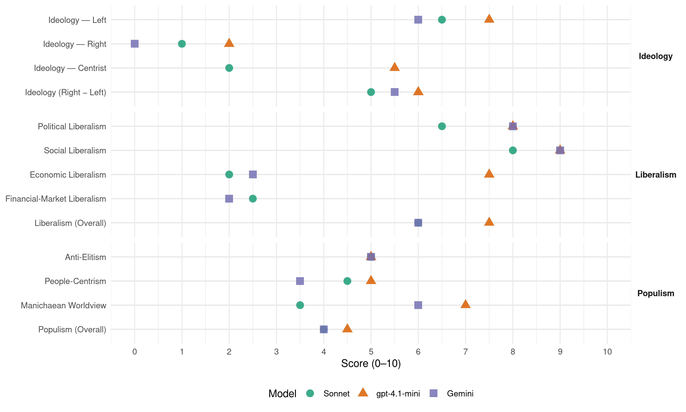

PPR (Netherlands, 1986)
manifesto_id 22310_198605
Get full text: This site shows derived annotations and short verbatim quotes only. The full manifesto text is © Manifesto Project / WZB — obtain it via manifesto-project.wzb.eu using the manifesto_id above.
Headline scores
| Dimension | Sonnet | gpt-4.1-mini | Gemini |
|---|---|---|---|
| Populism (Overall) | 4.0 | 4.5 | 4.0 |
| Anti-Elitism | 5.0 | 5.0 | 5.0 |
| People-Centrism | 4.5 | 5.0 | 3.5 |
| Manichaean Worldview | 3.5 | 7.0 | 6.0 |
| Ideology (Right − Left) | 5.0 | 6.0 | 5.5 |
| Liberalism (Overall) | 6.0 | 7.5 | 6.0 |
| Political Liberalism | 6.5 | 8.0 | 8.0 |
| Social Liberalism | 8.0 | 9.0 | 9.0 |
| Economic Liberalism | 2.0 | 7.5 | 2.5 |
| Financial-Market Liberalism | 2.5 | – | 2.0 |
Evidence per dimension
Economic Liberalism
Gemini · score 2.0 · verified · chunk 1
“vrije spel der maatschappelijke krachten aan duidelijke regels”
behoud van de aarde: daar gaat het om. Daarvoor is noodzakelijk dat het vrije spel der maatschappelijke krachten aan duidelijke regels wordt gebonden. De PPR bepleit een planmatige
Gemini · score 3.0 · verified · chunk 2
“Winkels moeten de vrijheid krijgen”
buiten de vaste kantooruren bereikbaar moeten zijn en zal initiatieven daartoe ontplooien, respectievelijk steunen. Winkels moeten de vrijheid krijgen om met inachtneming
gpt-4.1-mini · score 7.0 · verified · chunk 1
“stimulering en ontwikkeling van arbeidsintensieve en kansrijke sectoren”
In het economisch beleid moet de nadruk worden gelegd op stimulering en ontwikkeling van arbeidsintensieve en kansrijke sectoren. Hierbij moet worden aangesloten bij de sociaal-economische structuur van de regio’s. Bij elke productiebeslissing moeten de gevolgen voor milieu, energieverbruik en internationale arbeidsverdeling maatschappelijk controleerbaar zijn.
gpt-4.1-mini · score 8.0 · verified · chunk 2
“Lastenverschuiving van arbeid naar kapitaal”
-Lastenverschuiving van arbeid naar kapitaal. -Sociale lasten baseren op toegevoegde waarde. -Progressieve aardgastarieven voor het verbruik boven de 2000 kubieke meter per jaar.
Sonnet · score 2.0 · verified · chunk 1
“planmatige aanpak van de nationale economische ontwikkeling”
De PPR bepleit een planmatige aanpak van de nationale economische ontwikkeling. Binnen dat kader zorgen decentralisatie van besluitvorming, zelfbeheer en medezeggenschap ervoor dat plannen worden gemaakt door de direct betrokkenen.
Sonnet · score 4.0 · mixed · chunk 2
“Afschaffing van de meeste WIR-premies”
Afschaffing van de meeste WIR-premies en andere ongerichte steun aan het bedrijfsleven. Verhoging van de vennootschapsbelasting tot 48%.
Financial-Market Liberalism
Gemini · score 2.0 · verified · chunk 1
“sleutelindustrieën en financiële instellingen als banken”
volksvertegenwoordiging in sleutelindustrieën en financiële instellingen als banken en verzekeringsmaatschappijen is daarom dringend nodig. Voor verdere
gpt-4.1-mini · score 5.0 · mixed · chunk 1
“de grote politieke en economische macht van sleutelindustrieën en financiële instellingen als banken en verzekeringsmaatschappijen te verminderen en inzichtelijker te maken”
Om de grote politieke en economische macht van sleutelindustrieën en financiële instellingen als banken en verzekeringsmaatschappijen te verminderen en inzichtelijker te maken moeten meer vertegenwoordigers van samenleving en overheid bij het beleid van dergelijke industrieën en instellingen betrokken worden. Grond en bodemschatten en hun opbrengsten behoren in gemeenschapshanden te komen en te blijven.
Sonnet · score 2.0 · verified · chunk 1
“Medebeslissingsrecht van werknemers en volksvertegenwoordiging in financiële instellingen als banken”
Medebeslissingsrecht van werknemers en volksvertegenwoordiging in sleutelindustrieën en financiële instellingen als banken en verzekeringsmaatschappijen is daarom dringend nodig.
Sonnet · score 3.0 · verified · chunk 2
“Verhoging van de vennootschapsbelasting tot 48%”
Afschaffing van de meeste WIR-premies en andere ongerichte steun aan het bedrijfsleven. Verhoging van de vennootschapsbelasting tot 48%.
Political Liberalism
Gemini · score 8.0 · verified · chunk 1
“versterking van de parlementaire democratie”
erkenning van de waarde van buiten parlementaire actie pleit de PPR ondubbelzinnig voor versterking van de parlementaire democratie. Daarvoor is maatschappelijke actie onmisbaar. Politici
Gemini · score 8.0 · verified · chunk 2
“persoonlijke vrijheid en democratische rechten”
hoeveel regulering en controle kan een samenleving verdragen zonder aantasting van persoonlijke vrijheid en democratische rechten? Niet de kwantiteit
gpt-4.1-mini · score 8.0 · verified · chunk 1
“versterking van de parlementaire democratie. Daarvoor is maatschappelijke actie onmisbaar”
Met de erkenning van de waarde van buiten parlementaire actie pleit de PPR ondubbelzinnig voor versterking van de parlementaire democratie. Daarvoor is maatschappelijke actie onmisbaar. Politici dienen meer dan nu te beseffen, dat wie gekozen wordt ook daadwerkelijk moet vertegenwoordigen. Een regeerakkoord mag niet zo worden toegepast, dat serieuze discussie en daarop gebaseerde parlementaire besluitvorming worden aangetast.
gpt-4.1-mini · score 8.0 · verified · chunk 2
“democratie en vrijheid”
Wij leven in een open samenleving en dat willen we graag zo houden. De vraag is waarde grenzen liggen en hoeveel vrijheid met risico’s van onveiligheid de samenleving kan verdragen.
Sonnet · score 6.0 · verified · chunk 1
“versterking van de parlementaire democratie”
Met de erkenning van de waarde van buiten parlementaire actie pleit de PPR ondubbelzinnig voor versterking van de parlementaire democratie. Daarvoor is maatschappelijke actie onmisbaar.
Sonnet · score 7.0 · verified · chunk 2
“wezen van de parlementaire democratie wordt opgeofferd”
als terwille van een coalitie of het voortbestaan van een kabinet het wezen van de parlementaire democratie wordt opgeofferd dan is burgerlijk verzet dringend nodig.
Liberalism (Overall)
Gemini · score 5.0 · verified · chunk 1
“versterking van de parlementaire democratie”
erkenning van de waarde van buiten parlementaire actie pleit de PPR ondubbelzinnig voor versterking van de parlementaire democratie. Daarvoor is maatschappelijke actie onmisbaar. Politici
Gemini · score 7.0 · verified · chunk 2
“persoonlijke vrijheid en democratische rechten”
hoeveel regulering en controle kan een samenleving verdragen zonder aantasting van persoonlijke vrijheid en democratische rechten? Niet de kwantiteit
gpt-4.1-mini · score 7.0 · verified · chunk 1
“versterking van de parlementaire democratie. Daarvoor is maatschappelijke actie onmisbaar”
Met de erkenning van de waarde van buiten parlementaire actie pleit de PPR ondubbelzinnig voor versterking van de parlementaire democratie. Daarvoor is maatschappelijke actie onmisbaar. Politici dienen meer dan nu te beseffen, dat wie gekozen wordt ook daadwerkelijk moet vertegenwoordigen. Een regeerakkoord mag niet zo worden toegepast, dat serieuze discussie en daarop gebaseerde parlementaire besluitvorming worden aangetast.
gpt-4.1-mini · score 8.0 · verified · chunk 2
“Wij leven in een open samenleving en dat willen we graag zo houden”
Wij leven in een open samenleving en dat willen we graag zo houden. De vraag is waarde grenzen liggen en hoeveel vrijheid met risico’s van onveiligheid de samenleving kan verdragen.
Sonnet · score 5.0 · mixed · chunk 1
“versterking van de parlementaire democratie”
Met de erkenning van de waarde van buiten parlementaire actie pleit de PPR ondubbelzinnig voor versterking van de parlementaire democratie. Daarvoor is maatschappelijke actie onmisbaar.
Sonnet · score 6.0 · verified · chunk 2
“homo’s, meer dan nu de gelegenheid zich gelijkwaardig”
krijgen vrouwen, maar ook mannen, jongeren, ouderen, homo’s, meer dan nu de gelegenheid zich gelijkwaardig, naar eigen wens en vermogen te ontplooien
Anti-Elitism
Gemini · score 7.0 · verified · chunk 1
“macht van deze kleine elite moet worden afgebroken”
wegen kennen, ongestoord hun gang kunnen gaan. De macht van deze kleine elite moet worden afgebroken en hun kennis en rijkdom behoren eerlijker te
Gemini · score 3.0 · verified · chunk 2
“door toedoen van een parlementaire meerderheid”
als alle wettige middelen hebben gefaald, -als door toedoen van een parlementaire meerderheid wezenlijke belangen en diepgewortelde overtuigingen
gpt-4.1-mini · score 8.0 · verified · chunk 1
“De macht van deze kleine elite moet worden afgebroken”
onbegrijpelijk Binnenhoftaal, maar in de taal en de argumenten van de burgers. Besluitvorming en discussie mogen niet achter de schermen plaatsvinden, maar horen thuis in openbare vergaderingen van het parlement. Er moeten initiatieven genomen worden om de invloed van kiezers te vergroten en de positie van het parlement tegenover regering en ambtenaren te versterken. De macht van deze kleine elite moet worden afgebroken en hun kennis en rijkdom behoren eerlijker te worden verdeeld. Sociale vaardigheid en mondigheid van mensen is voorwaarde om dit te bereiken.
gpt-4.1-mini · score 2.0 · verified · chunk 2
“politici… geen tot politieke dieren gereduceerde vakidioten”
Ze blijven, kortom herkenbaar voor 14 miljoen mensen die niet professioneel in de politiek zitten. Ze moeten gewone mensen blijven en geen tot politieke dieren gereduceerde vakidioten, die hun persoonlijkheid ondergeschikt maken aan hun functie of de cultuur van hun partij.
Sonnet · score 7.0 · verified · chunk 1
“De macht van deze kleine elite moet worden afgebroken”
Onze maatschappij lijkt een ondoordringbaar woud, waarin zij die de wegen kennen, ongestoord hun gang kunnen gaan. De macht van deze kleine elite moet worden afgebroken en hun kennis en rijkdom behoren eerlijker te worden verdeeld.
Sonnet · score 3.0 · verified · chunk 2
“rechtse partijen zijn verantwoordelijk voor de slechte naam”
Niet alleen rechtse partijen zijn verantwoordelijk voor de slechte naam, die de politiek bij veel mensen heeft. Interne verdeeldheid, intolerantie
Ideology — Centrist
gpt-4.1-mini · score 6.0 · verified · chunk 1
“De PPR kiest haar politieke prioriteiten, hierna aangeduid als hoofdpunten van beleid, op basis van een politieke visie die uiterst kritisch is over de huidige maatschappijstructuur”
De PPR kiest haar politieke prioriteiten, hierna aangeduid als hoofdpunten van beleid, op basis van een politieke visie die uiterst kritisch is over de huidige maatschappijstructuur en de ongelijke verdeling van invloed, zeggenschap, macht, werk en inkomen. De eerste prioriteit van de PPR ligt dan ook in het willen opkomen voor bedreigden, afhankelijken, machtelozen; meehelpen hun mondigheid te vergroten, stem geven aan hun verlangens, vechten voor verbetering van hun situatie.
gpt-4.1-mini · score 5.0 · verified · chunk 2
“Wij zoeken samenwerking met gelijkgezinden in de politiek, maar ook daarbuiten”
De PPR wil politiek bedrijven op basis van een duidelijk programma, maar zonder krampachtig vast te houden aan eenmaal ingenomen standpunten. Wij zoeken samenwerking met gelijkgezinden in de politiek, maar ook daarbuiten.
Sonnet · score 2.0 · verified · chunk 1
“radicale partij, die problemen aan de wortel wil aanpakken”
De PPR is een radicale partij, die problemen aan de wortel wil aanpakken, open staat voor nieuwe ideeën en ruimte wil maken voor initiatieven en vernieuwing.
Sonnet · score 2.0 · verified · chunk 2
“politiek bedrijven op basis van een duidelijk programma”
De PPR wil politiek bedrijven op basis van een duidelijk programma, maar zonder krampachtig vast te houden aan eenmaal ingenomen standpunten.
Ideology — Left
Gemini · score 8.0 · verified · chunk 1
“vermaatschappelijking van de economie met een eerlijke verdeling”
het meest aan hun trekken komen. De PPR staat voor een ‘vermaatschappelijking’ van de economie met een eerlijke verdeling van werk, inkomen, invloed en zeggenschap. Ieder
Gemini · score 4.0 · verified · chunk 2
“Lastenverschuiving van arbeid naar kapitaal”
minder mensen een beroep doen op de sociale uitkeringen. -Lastenverschuiving van arbeid naar kapitaal. -Sociale lasten baseren op toegevoegde waarde.
gpt-4.1-mini · score 8.0 · verified · chunk 1
“vermaatschappelijking van de economie met een eerlijke verdeling van werk, inkomen, invloed en zeggenschap”
De PPR staat voor een ‘vermaatschappelijking’ van de economie met een eerlijke verdeling van werk, inkomen, invloed en zeggenschap. Ieder mens heeft recht op economische onafhankelijkheid. Ieder mens heeft recht op een zelfstandig inkomen dat voldoende is om zich te kunnen ontplooien en aan de samenleving deel te nemen.
gpt-4.1-mini · score 7.0 · verified · chunk 2
“Lastenverschuiving van arbeid naar kapitaal”
-Lastenverschuiving van arbeid naar kapitaal. -Sociale lasten baseren op toegevoegde waarde. -Progressieve aardgastarieven voor het verbruik boven de 2000 kubieke meter per jaar.
Sonnet · score 8.0 · verified · chunk 1
“eerlijke verdeling van werk, inkomen, invloed en zeggenschap”
De PPR staat voor een ‘vermaatschappelijking’ van de economie met een eerlijke verdeling van werk, inkomen, invloed en zeggenschap.
Sonnet · score 5.0 · verified · chunk 2
“Lastenverschuiving van arbeid naar kapitaal”
Om aan te geven hoe de PPR haar voorstellen en wensen wil betalen: Lastenverschuiving van arbeid naar kapitaal.
Ideology (Right − Left)
Gemini · score 8.0 · verified · chunk 1
“vermaatschappelijking van de economie met een eerlijke verdeling”
het meest aan hun trekken komen. De PPR staat voor een ‘vermaatschappelijking’ van de economie met een eerlijke verdeling van werk, inkomen, invloed en zeggenschap. Ieder
Gemini · score 3.0 · verified · chunk 2
“Lastenverschuiving van arbeid naar kapitaal”
minder mensen een beroep doen op de sociale uitkeringen. -Lastenverschuiving van arbeid naar kapitaal. -Sociale lasten baseren op toegevoegde waarde.
gpt-4.1-mini · score 7.0 · verified · chunk 1
“De PPR kiest haar politieke prioriteiten, hierna aangeduid als hoofdpunten van beleid, op basis van een politieke visie die uiterst kritisch is over de huidige maatschappijstructuur”
De PPR kiest haar politieke prioriteiten, hierna aangeduid als hoofdpunten van beleid, op basis van een politieke visie die uiterst kritisch is over de huidige maatschappijstructuur en de ongelijke verdeling van invloed, zeggenschap, macht, werk en inkomen. De eerste prioriteit van de PPR ligt dan ook in het willen opkomen voor bedreigden, afhankelijken, machtelozen; meehelpen hun mondigheid te vergroten, stem geven aan hun verlangens, vechten voor verbetering van hun situatie.
gpt-4.1-mini · score 5.0 · verified · chunk 2
“Wij zoeken samenwerking met gelijkgezinden in de politiek, maar ook daarbuiten”
De PPR wil politiek bedrijven op basis van een duidelijk programma, maar zonder krampachtig vast te houden aan eenmaal ingenomen standpunten. Wij zoeken samenwerking met gelijkgezinden in de politiek, maar ook daarbuiten.
Sonnet · score 7.0 · verified · chunk 1
“eerlijke verdeling van werk, inkomen, invloed en zeggenschap”
De PPR staat voor een ‘vermaatschappelijking’ van de economie met een eerlijke verdeling van werk, inkomen, invloed en zeggenschap.
Sonnet · score 3.0 · verified · chunk 2
“Lastenverschuiving van arbeid naar kapitaal”
Om aan te geven hoe de PPR haar voorstellen en wensen wil betalen: Lastenverschuiving van arbeid naar kapitaal.
Ideology — Right
Gemini · score 0.0 · verified · chunk 1
“rechtvaardig en ruimhartig vluchtelingenbeleid”
actief in te zetten voor een daadwerkelijke naleving van de mensenrechten. Voor Nederland betekent dit ook een rechtvaardig en ruimhartig vluchtelingenbeleid. De PPR beschouwt ontwikkelingshulp als een recht
gpt-4.1-mini · score 2.0 · verified · chunk 1
“racistische partijen worden verboden. Actief strijd wordt gevoerd tegen racistische ideologie”
Alle discriminerende wetgeving ongedaan wordt gemaakt; actief en passief kiesrecht wordt ingevoerd voor iedereen die in Nederland woont. Racistische partijen worden verboden. Actief strijd wordt gevoerd tegen racistische ideologie in al haar uitingsvormen en dat justitie- en politiebeleid daarop worden afgestemd.
Sonnet · score 1.0 · verified · chunk 1
“actief en passief kiesrecht wordt ingevoerd voor iedereen”
alle discriminerende wetgeving ongedaan wordt gemaakt; actief en passief kiesrecht wordt ingevoerd voor iedereen die in Nederland woont. Racistische partijen worden verboden.
Manichaean Worldview
Gemini · score 6.0 · verified · chunk 1
“machthebbers weinig of niets doen aan de onverdraaglijke tegenstellingen”
brute onderdrukking overal ter wereld. Ze zien dat de machthebbers weinig of niets doen aan de onverdraaglijke tegenstellingen van deze tijd: miljoenen werkzoekenden, terwijl er
gpt-4.1-mini · score 7.0 · verified · chunk 1
“strijd door een onmiskenbare keus te maken tussen tegenstrijdige belangen”
Oorlog is te voorkomen, werkloosheid is oplosbaar en zure regen is te vermijden. Honger kan bestreden worden. De PPR voert deze strijd door een onmiskenbare keus te maken tussen tegenstrijdige belangen. Ze helpt mee bij de organisatie van tegen macht en laat zien dat de ’crisis, anders dan een periodiek weerkerende vulkaanuitbarsting, het resultaat is van bewust gemaakte politieke keuzen.
Sonnet · score 5.0 · verified · chunk 1
“ongelijke machtsverhoudingen en wapenwedloop”
Zolang er in Nederland een politieke meerderheid bestaat, die kiest voor handhaving van de ongelijke machtsverhoudingen en wapenwedloop. Doet ook het parlement weinig tegen de daarbij behorende economische machtsconcentraties.
Sonnet · score 2.0 · verified · chunk 2
“wezenlijke belangen en diepgewortelde overtuigingen”
door toedoen van een parlementaire meerderheid wezenlijke belangen en diepgewortelde overtuigingen van meerderheden of aanzienlijke minderheden
People-Centrism
Gemini · score 5.0 · verified · chunk 1
“omdat het om mensen gaat in de politiek”
over de politieke stijl van PPR- volksvertegenwoordigers. Die kan als volgt worden getypeerd: omdat het om mensen gaat in de politiek wil de PPR vriendelijk en constructief, maar ook
Gemini · score 2.0 · verified · chunk 2
“herkenbaar voor 14 miljoen mensen”
gewoon te leven. Ze blijven, kortom herkenbaar voor 14 miljoen mensen die niet professioneel in de politiek zitten.
gpt-4.1-mini · score 7.0 · verified · chunk 1
“meehelpen hun mondigheid te vergroten, stem geven aan hun verlangens”
eerste prioriteit van de PPR ligt dan ook in het willen opkomen voor bedreigden, afhankelijken, machtelozen; meehelpen hun mondigheid te vergroten, stem geven aan hun verlangens, vechten voor verbetering van hun situatie. Een partij als de PPR verkeert niet in de positie, dat directe en concrete belangenbehartiging op elk gewenst moment kan worden gegarandeerd.
gpt-4.1-mini · score 3.0 · verified · chunk 2
“Ze blijven, kortom herkenbaar voor 14 miljoen mensen”
Ze blijven, kortom herkenbaar voor 14 miljoen mensen die niet professioneel in de politiek zitten. Ze moeten gewone mensen blijven en geen tot politieke dieren gereduceerde vakidioten.
Sonnet · score 6.0 · verified · chunk 1
“Verschuiving van zoveel mogelijk besluitvorming naar de basis”
Het democratisch gehalte van de samenleving wordt niet allereerst in Den Haag bepaald. Maar door de mate waarin mannen en vrouwen betrokken worden bij alles waarover ze maar kunnen beslissen. Verschuiving van zoveel mogelijk besluitvorming naar de basis is de weg naar democratisering.
Sonnet · score 3.0 · verified · chunk 2
“herkenbaar voor 14 miljoen mensen”
Ze blijven, kortom herkenbaar voor 14 miljoen mensen die niet professioneel in de politiek zitten.
Populism (Overall)
Gemini · score 6.0 · verified · chunk 1
“macht van deze kleine elite moet worden afgebroken”
wegen kennen, ongestoord hun gang kunnen gaan. De macht van deze kleine elite moet worden afgebroken en hun kennis en rijkdom behoren eerlijker te
Gemini · score 2.0 · verified · chunk 2
“door toedoen van een parlementaire meerderheid”
als alle wettige middelen hebben gefaald, -als door toedoen van een parlementaire meerderheid wezenlijke belangen en diepgewortelde overtuigingen
gpt-4.1-mini · score 7.0 · verified · chunk 1
“De macht van deze kleine elite moet worden afgebroken”
Besluitvorming en discussie mogen niet achter de schermen plaatsvinden, maar horen thuis in openbare vergaderingen van het parlement. Er moeten initiatieven genomen worden om de invloed van kiezers te vergroten en de positie van het parlement tegenover regering en ambtenaren te versterken. De macht van deze kleine elite moet worden afgebroken en hun kennis en rijkdom behoren eerlijker te worden verdeeld. Sociale vaardigheid en mondigheid van mensen is voorwaarde om dit te bereiken.
gpt-4.1-mini · score 2.0 · verified · chunk 2
“Ze moeten gewone mensen blijven en geen tot politieke dieren gereduceerde vakidioten”
Ze blijven, kortom herkenbaar voor 14 miljoen mensen die niet professioneel in de politiek zitten. Ze moeten gewone mensen blijven en geen tot politieke dieren gereduceerde vakidioten, die hun persoonlijkheid ondergeschikt maken aan hun functie of de cultuur van hun partij.
Sonnet · score 6.0 · verified · chunk 1
“De macht van deze kleine elite moet worden afgebroken”
Onze maatschappij lijkt een ondoordringbaar woud, waarin zij die de wegen kennen, ongestoord hun gang kunnen gaan. De macht van deze kleine elite moet worden afgebroken en hun kennis en rijkdom behoren eerlijker te worden verdeeld.
Sonnet · score 2.0 · verified · chunk 2
“politieke vernieuwing nodig”
Interne verdeeldheid, intolerantie, sektarisme en ondoorzichtig taalgebruik vormen voor velen een belemmering. Daarom is politieke vernieuwing nodig.
Social Liberalism